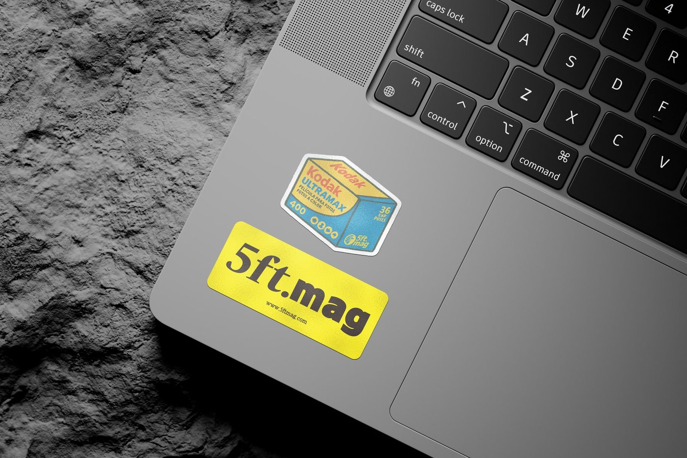

5ft magazine Vol.01 창간호를 주문하면, 매거진과 함께 작은 굿즈 두 가지가 들어갑니다. 책을 읽기 전후의 시간을 조금 더 오래 붙잡아두기 위해 만든 것들입니다.
첫 호를 종이로 만들면서 가장 오래 고민한 건 책 바깥의 경험이었습니다. 봉투를 열고, 책을 꺼내고, 다시 책상 위에 올려두는 짧은 순간에도 5ft magazine의 감각이 남았으면 했습니다. 그래서 창간호에는 조리개·셔터속도 노출표 카드와 필름 박스 스티커를 함께 넣었습니다.
1. 조리개·셔터속도 노출표 카드
필름 카메라를 들고 밖에 나가면 가끔 화면보다 먼저 숫자를 떠올려야 할 때가 있습니다. 햇빛은 어느 정도인지, 구름은 얼마나 끼었는지, 셔터속도와 조리개를 어디쯤에 두면 좋을지. 노출표 카드는 그런 순간을 위해 만든 작은 참고표입니다.
ASA 100 기준으로 정리한 표를 바탕으로, 밝은 바다나 모래사장부터 흐린 날의 그늘까지 상황별 값을 한눈에 볼 수 있게 구성했습니다. 정확한 답을 대신 정해주는 물건이라기보다, 촬영 전 감을 잡게 해주는 작은 지도에 가깝습니다.

2. 필름 박스 스티커
두 번째 굿즈는 5ft magazine의 시작점이 된 필름 박스 스티커입니다. 창간호의 필름인 Kodak UltraMax 400을 5ft magazine의 그래픽 언어로 다시 그려, 노트북이나 노트, 카메라 케이스에 붙일 수 있는 형태로 만들었습니다.
스티커는 기능보다 기분에 가까운 물건입니다. 필름을 좋아한다는 표시, 사진을 계속 찍고 싶다는 표시, 혹은 책상 위에 놓인 작은 색감 하나. 창간호를 곁에 두는 또 다른 방식이 되었으면 했습니다.

책과 함께 남는 작은 것들
매거진은 읽고 나면 책장에 꽂히지만, 굿즈는 조금 다른 방식으로 남습니다. 노출표 카드는 촬영 가방 안에, 스티커는 자주 쓰는 물건 위에. 그렇게 책 바깥에서도 창간호의 기분이 이어질 수 있기를 바랍니다.
두 굿즈는 5ft magazine Vol.01 창간호 구매 시 함께 제공됩니다. 준비된 수량 안에서 동봉되며, 구성은 상황에 따라 조기 소진될 수 있습니다.
창간호와 함께 받아보세요
5ft magazine Vol.01 창간호 구매 시 노출표 카드와 필름 박스 스티커 2종이 함께 제공됩니다.